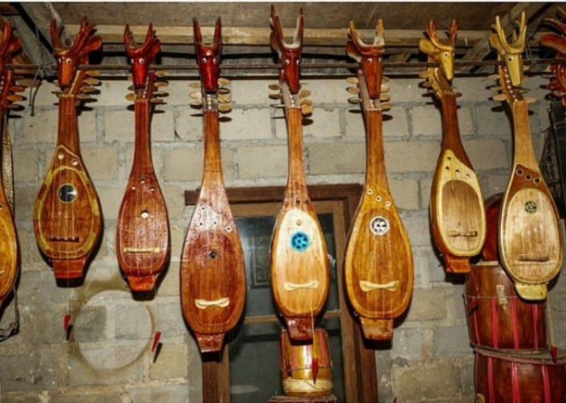

Menu Statistik
Tentang Website
Website ini menyajikan data statistik dan informasi
mengenai daerah Kepulauan Bangka Belitung.
|
Jumlah Penduduk Menurut Kabupaten/Kota, 2025
Jumlah penduduk dalam satuan jiwa atau orang.
| No. |
Kabupaten/Kota |
Jumlah Penduduk |
| 1 | Kabupaten Bangka | 346.070 |
| 2 | Kabupaten Belitung | 193.560 |
| 3 | Kabupaten Bangka Barat | 218.750 |
| 4 | Kabupaten Bangka Tengah | 213.490 |
| 5 | Kabupaten Bangka Selatan | 211.110 |
| 6 | Kabupaten Belitung Timur | 134.370 |
| 7 | Kota Pangkalpinang | 233.470 |
| Kepulauan Bangka Belitung |
1.550.820 |
Sumber:
Badan Pusat Statistik Kepulauan Bangka Belitung
Luas Daerah dan Jumlah Pulau, 2025
| No. |
Kabupaten/Kota |
Luas (km²) |
Persentase (%) |
Jumlah Pulau |
| 1 | Bangka | 3.011,44 | 18,06 | 64 |
| 2 | Belitung | 2.266,11 | 13,59 | 154 |
| 3 | Bangka Barat | 2.853,41 | 17,12 | 84 |
| 4 | Bangka Tengah | 2.253,85 | 13,52 | 23 |
| 5 | Bangka Selatan | 3.595,45 | 21,57 | 63 |
| 6 | Belitung Timur | 2.585,73 | 15,51 | 111 |
| 7 | Kota Pangkalpinang | 104,24 | 0,63 | - |
| Kepulauan Bangka Belitung |
16.670,22 |
100 |
501 |
Sumber:
Badan Pusat Statistik Kepulauan Bangka Belitung
Keterangan: Jumlah pulau dihitung berdasarkan
Gazetir Republik Indonesia Rupabumi Pulau edisi 3
tahun 2024 dari Badan Informasi Geospasial.
Budaya dan Kesenian
| Nganggung |
Tari Sambut Sepintu Sedulang |
Dambus |

|

|

|
|
Tradisi membawa makanan untuk dinikmati bersama
dalam kegiatan masyarakat.
|
Kesenian tari yang digunakan dalam kegiatan
penyambutan dan acara adat.
|
Alat musik tradisional yang dikenal dalam
kesenian Melayu Bangka.
|
Pariwisata dan Kuliner
| Pantai Bangka Belitung |
Lempah Kuning |
Rusip |

|

|

|
| Wisata pesisir dengan pemandangan pantai dan laut. |
Kuliner khas Bangka berbahan ikan dan rempah. |
Kuliner khas Bangka berupa hasil fermentasi ikan. |
|